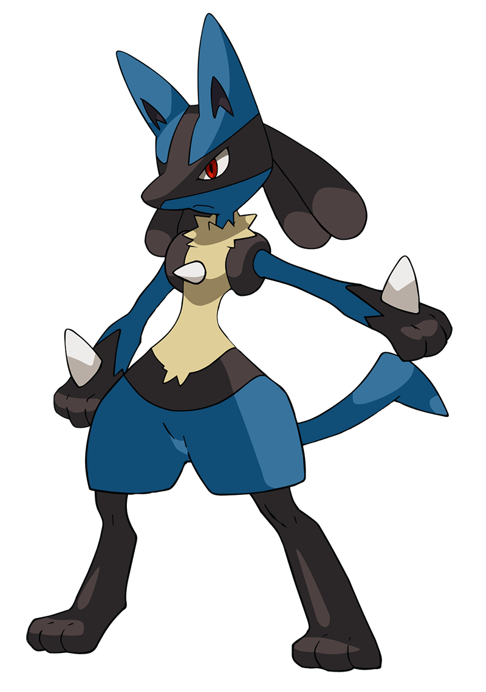

Lucario

Tipo:
Lucha | Acero
Debilidad:
Fuego | Tierra
Peso:
54.0 kg
Altura:
1.2 mt
Lucario tiene una habilidad especial conocida como vista aural que le permite ver el aura de las personas y de los Pokémon.